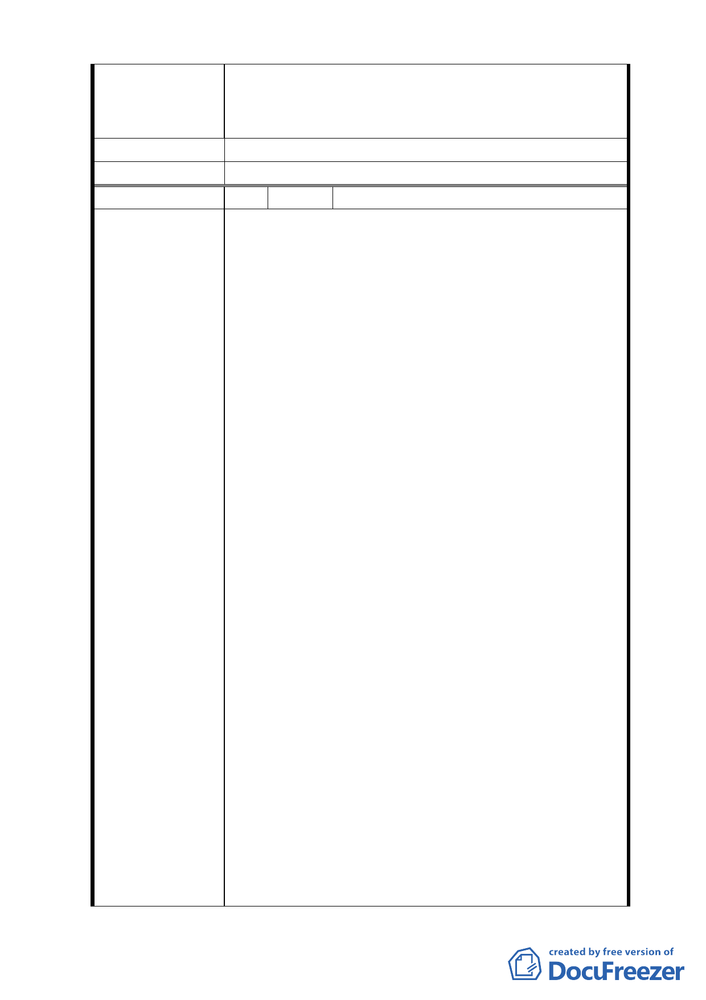

變更計畫中所提99年3月31日前取得建照事，囿於現
今情事實無法達成，陳請 鈞局予以取消設限。
建 議 辦 法 （同上）
委員會決議
所提建議業已錄案供委員審議參考。
編 號 6 陳情人 奇泰建設有限公司等 6 家
一、有關「金泰段臺北好好看開發案」陳情人等已悉
依臺北市政府都市發展局(以下簡稱「都發局」) 都
市計畫委員會「修正臺北市「基隆河 ( 中山橋至
成美橋段 ) 附近地區土地使用分區與都市設計管
制要點」(北段地區)計畫案」第594次大會及2次座
談會討論結果，並配合都發局98年9月14日北市都
規字第 098352214500 號函檢附之土地使用管制
要點草案，於98年9月21日前提送變更都市計畫
書，依法申請續行都市計畫之法定程序。
二、依98年10月30日北市都規字第09836521507號函規
定表訂規範內容、格式，於民國98年11月3日送請
陳情理由
臺北市都市計畫委員會(以下簡稱「都委會」) 辦
理公展在案、俟後獲臺北政府府都規字第
09838862600號函於98年12月23日至99年1月22日
公展完成。
三、陳情人等依前揭相關草案(98年9月10日建議方
案，如附表)設計規劃，且皆已完成環境影響評估
審查作業，俟都市計畫公告後即可申請核備。
四、然幾經折衝，眼見已近完成整合階段，難料99年5
月19日第二次專案審查會議，與前揭諸多會議結論
不一致，又將議題回至討論原點，分列說明如下：
(一)臺北市「基隆河(中山橋至成美橋段)附近地區土地
使用分區與都市設計管制要點」(北段地區)計畫案(下
稱「大灣北段通檢計畫」)，配合社經情勢變更已屆通
- 36 -